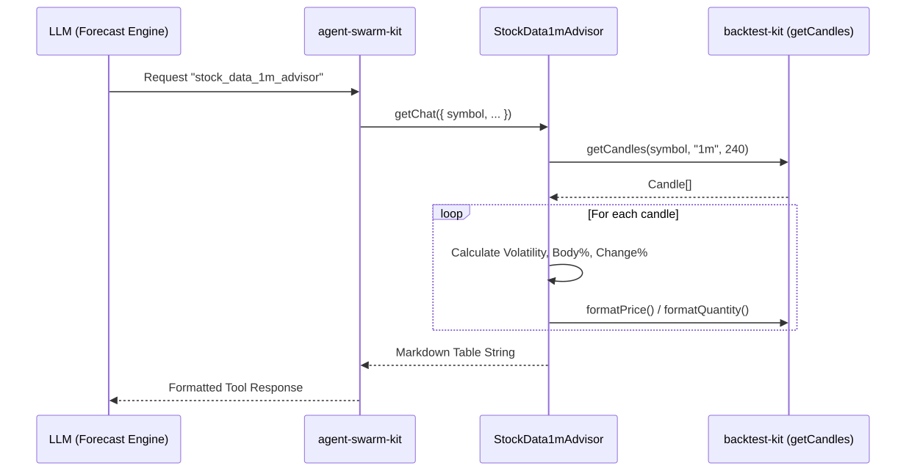

The news-sentiment-ai-trader utilizes a set of Advisors to provide the LLM with the necessary context to generate market forecasts. These advisors are registered via the agent-swarm-kit and act as specialized data retrieval tools. They transform raw data from external APIs and internal market state into structured Markdown or JSON formats optimized for LLM consumption.
The system implements three primary advisors defined in logic/enum/AdvisorName.ts:
The advisors bridge the gap between the "Code Entity Space" (API calls, data processing) and the "Natural Language Space" (Markdown tables, JSON summaries).
System Entity Mapping Title: Advisor Component Mapping

The TavilyNewsAdvisor is responsible for gathering qualitative data regarding market sentiment. It uses the WebSearchRequestContract which requires a symbol and a resultId.
TOPIC_QUERIES. Currently, it focuses on "sentiment" with queries targeting Bitcoin market sentiment (bullish, bearish, neutral, or sideways).Map keyed by URL to ensure that if multiple queries return the same article, it is only included once in the final output.title, content, and publishedDate.The market data advisors provide quantitative context. They share a similar implementation pattern but differ in their lookback windows and timeframes. Both utilize the StockDataRequestContract.
| Advisor | Timeframe | Limit (Candles) | Total Duration |
|---|---|---|---|
StockData1mAdvisor |
1m | 240 | 4 Hours |
StockData15mAdvisor |
15m | 32 | 8 Hours |
Registered as stock_data_1m_advisor, this component fetches 240 candles of 1-minute data using the getCandles utility from backtest-kit. It calculates several technical metrics for each candle to assist the LLM in understanding volatility and price action:
((high - low) / close) * 100.Registered as stock_data_15m_advisor, this component fetches 32 candles of 15-minute data. It uses the same formatting logic as the 1m advisor but provides a broader view of the market trend.
Both advisors format their data into a Markdown table for the LLM. The table includes:
YYYY-MM-DD HH:mm UTC using dayjs.formatPrice and formatQuantity to ensure correct decimal precision for the specific symbol.The following diagram illustrates how the agent-swarm-kit interacts with an advisor (e.g., StockData1mAdvisor) to produce data for the LLM.
Title: Advisor Execution Flow
